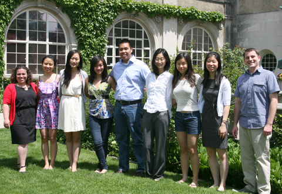
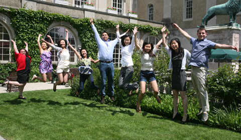

News Archives : 2012 : 12 Undergraduates Receive Awards
by Cathryn Delude, Ryan Draft and Thomas Torello
May 31, 2012

(L to R) Lisa Fountain, Xiaoli Mi, Yuying Luo, Lillian Tsai, Vernon Wu, Fei Song, Stephanie Lin, Priscilla Wang, Tom Torello. Not shown: Melanie Hu, Mark Regheb, Marielena Sosa, Alexandro Trevino and Tom Yu
Twelve undergraduates concentrating in either Molecular and Cellular Biology (MCB) or Chemical and Physical Biology (CPB) received awards for their theses in May 2012. Stephanie Lin (MCB), Xiaoli Mi (MCB), Mark Ragheb (MCB), Fei Song (MCB), Priscilla Wang (MCB), Vernon Wu (MCB) and Tom Yu (CPB) received the Harvard University Hoopes Prize for Excellence in the Work of Undergraduates. Lin and Wang also received the departmental Henderson Prize. Yuying Luo (MCB) and Lillian Tsai (MCB) received Henderson Prize Honorable Mentions.
Two undergraduates concentration in Neurobiology received the Harvard University Hoopes Prize for Excellence in the Work of Undergraduates: Melody Hu and Alex Trevino. Mari Sosa of Neurobiology won the first annual John E. Dowling Thesis Prize.
The John E. Dowling Thesis Prize was established in 2012 to commemorate the retirement of Harvard scientist, teacher, and Neurobiology Head Tutor John E. Dowling. This award marks outstanding scientific achievement in the field of Neurobiology. The recipient receives a framed certificate and $500 award.
The Lawrence J. Henderson Prize is ordinarily awarded to only one student for the most meritorious thesis presented to the Board of Tutors in Biochemical Sciences. However this year the committee honored four outstanding theses. The recipients receive a $350 book award, a framed certificate, and a copy of "Fitness of the Environment" by Professor Lawrence J. Henderson (1878-1942), who was known for his research on blood biochemistry.
The Thomas Temple Hoopes Prize was established in 1982 to “grant awards to undergraduates on the basis of outstanding scholarly work or research.” Each of this year’s 81 winners receives a cash award of $4,000.
Melody Hu (Hoopes Prize)
Thesis: NKCC1 on Oligodendrocytes and Vulnerability to Periventricular Leukomalacia: Investigating the Protective Effects of Bumetanide.
Advisor: Professor Frances Jensen, Harvard Medical School
Melody’s work explored the expression of the cation-chloride transporter NKCC1 on neural cells in the developing brain, in an effort to better understand the pathogenesis of periventricular leukomalacia, the primary pathological correlate of brain damage due to very preterm birth. Melody demonstrated that subacute brain injury can be mitigated by a NKCC1 inhibitor administered after brain injury. The hypothesis was well-developed, the experimental results were presented in a logical progression with appropriate controls and consideration of alternative interpretations, the results were discussed in a nuanced and insightful manner that demonstrated an excellent grasp of the literature of this complex problem, and the possible underlying mechanisms involved.
Alexandro Trevino (Hoopes Prize)
Thesis: The Contribution of SLPI to the Maintenance of Inflammatory Pain.
Advisor: Professor Cliff Woolf Harvard Medical School Alex researched the secretory leukocyte protease inhibitor (SLPI). In a wound model in mice, SLPI is expressed primarily in fibroblasts and basal keratinocytes. The preliminary hypothesis was that SLP1 increases trafficking of NaV1.8 channels to neuronal membranes. The experiments completed are quite extensive and of quality consistent with published reports in this area of research. They show a high level of technical achievement and scientific insight.
Marielena Sosa (Dowling Prize)
Thesis: Searching for molecular markers of feedback neurons in mouse visual cortex.
Advisor: Professor Rick Born Harvard Medical School
Mari performed experiments to try to identify genetic markers of feedback and feedforward neurons in the visual processing pathway of mice. Using a candidate gene approach, she assessed whether certain genes were more likely to be expressed in secondary visual cortical neurons projecting to primary visual cortex (feedback cells) as compared to the general population of secondary visual cortical neurons. Her results represent an outstanding piece of work, both experimentally and in written form: clear thinking, logical design, and execution of difficult experiments.
Stephanie Lin (Hoopes and Henderson Prizes)
Thesis: Integration of the ER and oxidative stress responses through SKN-1.
Advisor: Professor Keith Blackwell, Joslin Diabetes Center and Harvard Medical School
Lin revealed a previously unidentified link between the endoplasmic reticulum (ER) stress response and the SKN-1 mediated oxidative stress response. She hypothesized that the ER acts as an integrative stress-sensing center that may link to metabolic pathways. The reviewers said she presented novel and elegant experiments, which were suitable for a doctoral thesis at Harvard or MIT, in such a cogent manner that reading the thesis was a pleasure.
Yuying Luo (Henderson Prize Honorable Mention)
Thesis: 53BP1 Regulates the Aurora A/TPX2 Complex.
Advisor: Professor Yang Shi, Harvard Medical School Department of Cell Biology.
Luo explored the hypothesis that 53BP1 may regulate the activity of the Aurora A/TPX2 complex as part of its cell cycle regulatory/DNA damage checkpoint functions. The readers commented that Luo is a very talented undergraduate who shows great promise as a biologist and who produced a remarkable body of work that provides valuable contributions to the field.
Xiaoli Mi (Hoopes Prize)
Thesis: Embryonic Stem Cells Can Reconstitute the Epigenetic Landscape of H3K27me3 with High Fidelity after Global Erasure.
Advisor: Professor Alex Meissner, Broad Institute, Stem Cell and Regenerative Biology.
In embryonic stem (ES) cells, trimethylation of histone H3 at lysine 27 (H3K27me3) enriches at thousands of genomic loci and marks them for repression. Many of these loci correspond to key developmental genes that remain silenced in ES cells but become activated upon lineage commitment. Mi investigated whether ES cells are able to establish de novo patterns of H3K27me3 following genome-wide abolition of pre-existing H3K27me3. The reviewers called Mi's experiment "elegant" and "sophisticated" and commended her for presenting figures of "thoroughly professional quality" in a mature body of work.
Mark Ragheb (Hoopes Prize)
Thesis: Spatial and Temporal Regulation of Genetic Diversity in Mycobacteria.
Advisor: Professor Sarah Fortune, Harvard School of Public Health, Department of Immunology and Infectious Diseases. Mark sought to understand how genetic diversity is generated in order to better predict and understand the emergence of drug resistance in tuberculosis. He hypothesized that a novel, previously unidentified system of replicative fidelity is present in mycobacteria, he and used a novel forward genetics methodology, transposon capture and sequence (TraCS), to identify mutant strains with increased mutation rates. One reader described the thesis as an "excellent body of scientific work" and the other called it an "outstanding achievement".
Fei Song (Hoopes Prize)
Thesis: Expression and Function of the Mammalian SID-1 Orthodox, SidT1 and SidT2.
Advisor: Professor Craig Hunter, Molecular and Cellular Biology.
Song researched the function of the two mammalian orthologs of the C. elegans SID-1 gene, an apparent dsRNA transport channel required for systemic RNA interference. She addressed the important problem of determining the roles of SidT1/2 in mammals using mice as a model system. One reader said the writing was clear and the thinking very circumspect, displaying a strong understanding of the underlying techniques and biology.
Lillian Tsai (Henderson Prize Honorable Mention)
Thesis: Identification of immunogenic Salmonella enterica serotype Paratyphi A proteins uniquely expressed in humans and not under standard laboratory conditions.
Advisor: Professor Edward Ryan, Massachusetts General Hospital.
Enteric fever is a group of diseases that affects 20 million people each year. There are no animal models or vaccines available for paratyphoid fever, caused by Salmonella enterica Paratyphi A. Tsai used a high throughput immunoproteomic technique to identify S. Paratyphi A proteins expressed within infected humans but not when grown in laboratory conditions. The readers commented that this exceptional thesis was thoughtfully and capably executed, and “insightful and intense.”
Priscilla Wang (Hoopes and Henderson Prizes)
Thesis: Netrin-1 Promotes Glioblastoma Invasion and Angiogenesis Through a Cathepsin B-Dependent Mechanism.
Advisor: Professor Michael Klagsbrun, Harvard Medical School.
Wang confirmed her hypothesis that the axon guidance molecule netrin-1 promotes invasiveness and angiogenesis in glioblastoma, a lethal brain cancer, through the activity of cathepsin B, a lysosomal cysteine protease. She also made progress in defining the mechanism through which this occurs. The reviewers praised her professionally presented thesis for including a thoughtful discussion of alternative experimental approaches and a careful explanation of what the results do and do not tell us.
Vernon Wu (Hoopes Prize)
Thesis: CD1 Modulation of Decidual Immune Cell Activity.
Advisor: Professor Jack Strominger, Department of Molecular and Cellular Biology.
Wu studied the paradox of human pregnancy: why does the fetus not elicit a classical allogeneic response by the mother despite expressing paternal antigens? He studied the unique roles of CD1 expression on CD11cHIGH+ decidual macrophages in regulating maternal immune cell tolerance. The readers were impressed that Wu addressed the differences identified between his work and the published literature, and suggested further experimentation to further test the hypothesis.
Tom Yu (Hoopes Prize)
Thesis: Exploring Differences in Carbon Metabolism Between Short-Fat and Long-Skinny Ridgeia piscesae
Advisor: Professor Peter Girguis, Harvard University Department of Organismic and Evolutionary Biology Yu investigated whether two morphologically distinct deep-sea hydrothermal vent tubeworms Ridgeia piscesae (classified as "short-fat" and "long-skinny") that have different carbon isotope signatures utilize carbon differently. Using a remarkable range of cutting-edge techniques, Yu found that the endosymbionts present in both types have the genes needed to fix carbon via two distinct biochemical pathways, but each type preferentially utilizes one of the two pathways. The readers praised his thorough, thoughtful investigation, which “almost read like a scientific detective story” as possible causes for the carbon isotope differences were eliminated one by one.

[May 31, 2012]